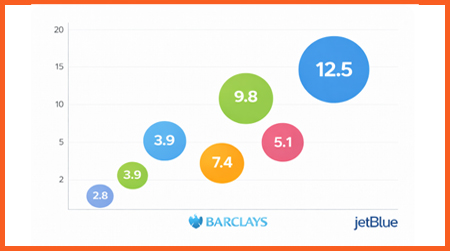

♔ Resume

Professional Summary
• Experience in financial models, data analysis, financial reporting, and pro forma statement analysis
• Executive-level presentation and articulate storytelling for C-Suite audience
• Strong understanding of regulatory reporting, risk management controls, and project management
• Technical skills: ChatGPT, MS Office (VBA), Bloomberg, Hyperion, SAP, basic Python, SQL, Adobe CS, HTML
Experience

Senior Financial Analyst, Central FP&A | New York, NY | JetBlue | 09/ 2025 – Current
• Designed and maintained dashboards providing visibility into expenses KPIs, and operational performance
• Delivered monthly/quarterly performance analysis, identifying trends, drivers, and variances to support strategy
• Contributed to annual budget development, forecasting cycles, and long-range plans
• Partnered with operations and leadership to develop presentations for Board, Investor Relations, and C-Suite
• Supported consolidation of VP P&Ls into a comprehensive reporting package for executive compensation scorecards
Sr Financial Analyst I, Stress Testing | New York, NY | American Express | 04/ 2025 – 09/ 2025
• Supported the development of financial projections across different macroeconomic environments to support various stress testing exercises
• Explored and developed several forecasting methodologies to define key non-interest income line items
• Delivered executive-level presentations to senior management to drive decision-making strategies

PPNR Analyst, Model Development Team | New York, NY | Barclays | 03/ 2023 – 06/ 2024
• Managed financial risks models to forecast proforma statements across various stress scenarios, utilizing
financial modeling techniques, including industry benchmarking, back testing, and sensitivity analysis
• Performed variance analysis to monitor model performance against budget and regulatory requirements
• Supported validation, model development, methodology documentation to align models to regulatory standards and mitigate financial risk
• Interfaced with global partners to coordinate annual CCAR submission and plan internal risk appetite exercises
Rotational Analyst, Rotational Analyst Program | McLean, VA | Freddie Mac | 01/ 2021 – 10/ 2022
Chief Economist's Office
• Managed the national Freddie Mac mortgage survey (PMMS) —tabulated interest rates for the 30-year fixed mortgage rate time series (I:US30YMR)
• Presented weekly analysis of key macroeconomic data releases and supporting commentary to management team
Financial Planning and Analysis Team
• Performed forecasting, budgeting, and variance analysis on Single Family (SF) divisional G&A expenses
• Created monthly financial reports to identify key financial trends for strategic planning purposes
• Performed process improvements by automating the monthly reporting dashboards
Education
Baruch College | New York, NY | MS in Finance
Columbia University | New York, NY | BA in Latin American Studies
PPNR Analyst, Model Development Team | New York, NY | Barclays | 03/ 2023 – 06/ 2024
• Managed financial risks models to forecast proforma statements across various stress scenarios, utilizing
financial modeling techniques, loremipsum loremipsum including industry benchmarking, back testing, and sensitivity analysis